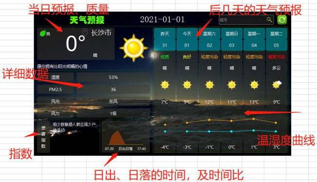
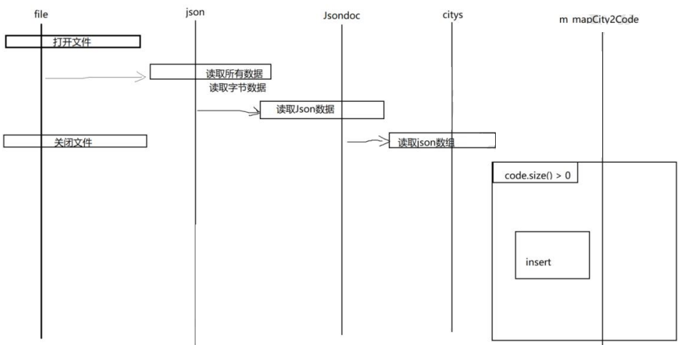

CONTENT OUTLINE
Qt开发中的碎碎念
〇 目录
一 Weather项目
1.1 项目设计
天气预报是我们经常使用的一个工具，一般我们在手机上、电脑上，都有独立的应用，来提供查询天气预报。
此处，我们使用 Qt 来开发一款天气预报的应用。

功能包括：
- 有城市的天气预报，有背景图、控件半透明化。
- 显示日期，城市名称，当天的天气预报
- 当天天气预报的详细数据
- 该天的一些生活指数：如感冒指数、每日寄语
- 当天的日出日落时间，及扇形时间占比
- 该城市，前一后四天的天气预报，含有日期，星期，天气，高低温
- 最近一周的温湿度曲线
- 搜索框、刷新按钮
- 窗口大小固定，无最大、最小化、关闭按钮。鼠标拖动窗口移动，右键退出。
- 自定义按钮图标
实现思路：
- UI
- 绘制基本界面，设计界面网状表格
- 添加控件、添加资源图片
- 网络
- 请求数据
- 解析数据
- UI
- 根据数据更新控件上的数据和资源图标
- 根据数据绘制图案
以下每个步骤均只简要记录。
1.2 创建项目
使用
QWidget创建项目【不需要QMainWindow的状态栏和菜单栏】添加
qrc资源文件时，此项目是在三个图像文件夹中分别创建三个qrc文件，即在创建对话框中填写的路径为/icons/icons【以icons文件夹为例】UI编辑器设置画布大小为
800*450，然后从左侧选择Containers中Widget，直接从工具栏中拖到窗口，设置高宽将父组件他铺满【也可以在属性里设置坐标 (0, 0)，高宽800*450】，最后设置styleSheet属性：1
2
3
4
5
6
7
8
9
10
11
12
13
14
15
16
17
18QWidget#widget{
border-image: url(:/weaUI/weaUI.png);
color:rgb(255, 255, 255);
}
QLabel{
font: 25 10pt "Microsoft YaHei";
border-radius: 4px;
background-color: argb(60, 60, 60, 130);
color: rgb(255, 255, 255);
}
Line{
background-color: rgb(0, 85, 0);
}
/*将 widget 的 border-image（背景图片）设置成 weaUI.png
*字体颜色设置：255, 255, 255（白色）
*QLabel控件设置字体。border-radius（圆角边半径）4 个像素。
*background-color（背景颜色）：argb(60, 60, 60, 130);【对于rgb值和透明度】
*Line线条控件的 background-color: rgb(0, 85, 0);背景颜色 */设置无边框窗口和不可缩放
1
2
3
4//设置窗口属性为无边框窗口
setWindowFlag(Qt::FramelessWindowHint);
//设置不可在右下角缩放
setFixedSize(width(), height());如果需要编辑ui的XML文件，需要使用外部软件【如Notepad++】打开修改。此处修改QMainWindow为QWidget。
1.3 鼠标拖动窗体和右键退出
右键退出
- 在头文件的类的私有成员变量声明中加入QMenu指针【退出菜单】、QAction行为【exit行为，即右键菜单中的选项】
- 在QWidget类的实现中，将两个私有指针指向新创建的QMenu和QAction，并设置文本、Icon，将QAction加入QMenu并使用connect注册信号和槽关系。
- 需要实现contextMenuEvent函数【鼠标右击菜单事件】和槽函数
slot_exitApp()
鼠标拖动
- 新增一个QPoint私有成员记录差值
- 新增两个事件【mousePressEvent | mouseMoveEvent】函数并实现
- 鼠标拖动的实现思路：保持鼠标点击拖动时位置与应用窗口的相对位置保持不变【约束条件】
- 鼠标按下时，记录差值，即鼠标点击的屏幕坐标 - 窗口的屏幕坐标。【其实记录鼠标在窗口内的坐标】
- 鼠标移动时同步修改窗口坐标为【鼠标的屏幕坐标 - 差值】
1.4 绘制基础界面
基础控件
- 新增一个
Line Edit【只显示一行的文本框，用于显示和输出城市】，并设置位置和大小属性。 - 新增一个
Label【用于显示日期】，并设置属性：位置、大小、本文字体及字号、对齐方式、StyleSheet等。 - 新增三个水平Line【属于Display Widget，用于分配区域】，分别修改位置参数。
网格布局
- 在第二线与第三线之间添加Grid Layout，再向其中加入4行3列的Label控件【默认等高等宽分割，想要得到不等分割的单元格，需要添加后点击并Delete删除，再将旁侧单元格拉长占用】，这样就可以等到等高且1:3宽度的表格布局。
- 修改Label属性：对象名、对齐方式、【可选择多个同时修改】
- 值得注意的一点是：形成三行合并的部分【在两大竖行合并时，如果删除其中一个，则网格会塌陷为两行；此时只需要将其中列数较小的一个Label拖至其他网格即可】
1.5 添加UI控件
UI控件命名、默认内容、样式的填写
1.6 控件添加图标资源
剩余左上角、左下角部分布局
- 实现竖排文本：打开文本编辑框，回车换行的方式会产生较大行距，可Shift+换行。
- 左下角新增文本工具【text browser】
- 右上角搜索框内添加按钮【tool Button，用于搜索确认】，设置位置属性、图标【使用styleSheet中的border-image】。
- 右上角搜索框右侧添加按钮【tool Button，用于刷新】，设置位置属性、图标【使用styleSheet中的border-image】、背景色。
- 修改右上角输入框的悬浮鼠标样式【】
1.7 QJson
QJson 是 Json 的一种扩展，也就是一种简单的数据结构。
在本天气预报应用中，数据时刻都在更新。因此，我们需要向网络公共API请求数据，并接收 Json 格式的返回。
那么什么是 Json？ JSON【JavaScript Object Notation】 是一种轻量级的数据交换格式。它使得人们很容易的进行 阅读和编写。同时也方便了机器进行解析和生成。它是基于 JavaScript Programming Language , Standard ECMA-262 3rd Edition - December 1999 的一个子集。
JSON 采用完 全独立于程序语言的文本格式，但是也使用了类 C 语言的习惯（包括 C, C++, C#, Java, JavaScript, Perl, Python 等）。这些特性使 JSON 成为理想的数据交换语言。
Json 基于两种结构：
- 名称：值
- 值的有序列表
而 QJson 也就是 Qt 版的 Json，具体内容查阅文档【QJsonDocument】
1 |
|
1.8 查询天气预报的开放API
1 | http://t.weather.itboy.net/api/weather/city/101010100/ |
101010100为对应城市的编码
1 | { |
1.9 读取本地Json的城市列表并解析
新增头文件
WeatherTool.h【解析本地资源文件】，并在其中初始化读取本地Json资源，读取流程如图所示：
新增两个类【当天天气类Today、天气预报数据类Forecast】，都放在头文件
weatherdata.h中直接定义。新增
weatherdata.cpp文件对类中变量做初始，以及=号操作的实现。需要注意字符串数值的转换，如：1
pm25 = QString::number( dataObj.value("pm25").toDouble() );
1.10 Ui及数据的初始化操作
- 在widget.h中新增私有变量，用于管理ui数据【7个
QList】 <<是 Qt 中QList的重载操作符，用于向列表中追加数据。- 遍历 forecast_week_list 和 forecast_date_list，添加样式和更改数据。
- 设置右上角搜索框的样式：圆角、透明度。
注意：脚本只识别rgba或rgb，而不是argb。
1.11 请求天气 API 数据
使用Qt中的 QNetworkAccessManager 类，调用API网络接口，该类允许应用程序发送网络请求并接收响应。
- 在使用之前需要头文件：
#include <QNetworkAccessManager> - 而且在
pro文件中，要添加：QT += network才能正常使用：QT += core gui network - 对于
http来说，最常见的就是post和get请求，该类中也封装了相应的函数。
1 | //Header: #include <QNetworkAccessManager> |
在 widget.h 头文件中新增私有成员变量：
1 | //Network |
在其实现的构造函数中初始化并注册信号和槽函数的对应关系：
1 | //网络请求初始化 |
注意：
- 槽函数
replayFinished(QNetworkReply*)需要加入到widget.h声明中，并在widget.cpp中实现。 getWeatherInfo(manager)函数作为protected函数在widget.h中声明，并在widget.cpp中实现。parseJson(QByteArray& bytes)函数作为protected函数在widget.h中声明，并在widget.cpp中实现。
1 | /*槽函数：处理网络请求回调*/ |
1.12 解析天气信息
- 在
widget.h头文件中新增私有成员变量：本地数据【Today today; Forecast forecast[6];】 parseJson(QByteArray& bytes)解析函数见1.11节。
1 | //解析接口数据 |
1.13 应用数据
void setLabelContent()函数作为protected函数在widget.h中声明，并在widget.cpp中实现，用于将数据应用在ui组件上。- 新增
WeatherTypeIcoTool类【几乎类似WeatherTool类】，用于读取本地Json，建立天气类型字段与其对应图标的对应关系。
1.14 绘制日出日落曲线
1.14.1 QPainter 类
QPainter 类，用于低级【点、线、面】图像绘制。QPainter 类的成员有一下几种角色：
- QPen : 用于绘制几何图形的边缘，由颜色、宽度线风格等参数组成；
- QBrush : 用于填充几何图形的调色板,由颜色和填充风格组成；
- QFont : 用于文本绘制；
- QPixmap : 绘制图片，可以加速显示，带有屏幕截图、窗口截图等支持，适合小图片；
- QImage : 绘制图片，可以直接读取图像文件进行像素访问，适合大图片；
- QBitmap :
QPixmap的一个子类，主要用于显示单色位图； - QPicture : 绘图装置，用于记录和重播
Qpainter的绘图
QPainter 基础图形绘制相关函数：
1 | /* |
1.14.2 绘制日出日落曲线
本应用中绘制日出日落曲线，使用Pen绘制直线、曲线、文字，使用刷子绘制扇形。
1 | // 日出日落底线 |
值得注意的是：何时如何调用 paintSunRiseSet 函数？
在
Widget构造函数中，注册定时器和事件连接1
2
3
4
5
6
7
8
9
10
11
12
13
14
15Widget::Widget(QWidget *parent)
: QWidget(parent)
, ui(new Ui::Widget)
{
ui->setupUi(this);
//......
//安装绘图事件
ui->sunRiseSetLb->installEventFilter(this);//在eventFilter函数中处理
//自动刷新日出日落曲线
sunTimer = new QTimer(ui->sunRiseSetLb);
sunTimer->start(2000); //2s触发一次
// 当定时器时间到期，自动触发sunRiseSetLb的update()
connect(sunTimer, SIGNAL(timeout()), ui->sunRiseSetLb, SLOT(update()));
}virtual bool eventFilter(QObject* watched, QEvent* event)函数作为public函数在widget.h中声明，并在widget.cpp中实现，用于接收事件信号【如果是来自sunRiseSetLb的绘图事件信号，则处理，其余事件交予父类的默认处理】1
2
3
4
5
6
7bool Widget::eventFilter(QObject* watched, QEvent* event){
if(watched == ui->sunRiseSetLb && event->type() == QEvent::Paint){
paintSunRiseSet();
}
// 否则为默认处理
return QWidget::eventFilter(watched, event);
}
1.15 绘制温湿度折线
void paintCurve()函数作为protected函数在widget.h中声明，并在widget.cpp中实现，用于绘制温湿度折线。- 添加事件过滤，即时渲染。
1.16 收尾功能
① 搜索
在UI设计界面，右击刷新图标，选择转到槽，选择点击事件 clicked()。
自动添加 on_refreshBt_clicked() 槽函数，并编写细节：
1 | void Widget::on_refreshBt_clicked() |
② 刷新
同上一小节的搜索，自动添加on_searchBt_clicked ()函数，并编写细节，详见上。
③ 事件过滤
为温湿度曲线、编辑框、日出日落曲线添加事件过滤器
在
Widget构造函数中安装事件过滤器1
2
3
4//安装绘图事件
ui->sunRiseSetLb->installEventFilter(this);
ui->cityLineEdit->installEventFilter(this);
ui->curveLb->installEventFilter(this);在自定义事件过滤器中对特定事件进行处理
1
2
3
4
5
6
7
8
9
10
11
12
13
14
15
16
17//widget.h中
public:
Widget(QWidget *parent = nullptr);
~Widget();
virtual bool eventFilter(QObject* watched, QEvent* event);
//widget.cpp中
bool Widget::eventFilter(QObject* watched, QEvent* event){
if(watched == ui->sunRiseSetLb && event->type() == QEvent::Paint){
paintSunRiseSet();
}
else if(watched == ui->curveLb && event->type() == QEvent::Paint){
paintCurve();
}
// 否则为默认处理
return QWidget::eventFilter(watched, event);
}
二 Problems
2.1 中文乱码问题
https://www.bilibili.com/read/cv30909641/【Qt程序乱码-从理解到消失】
https://www.jb51.net/article/275365.htm【QT6中QTextcodec头文件找不到的解决方法】
【未解决】资源【如图片】文件名字带中文，不能编译
修改资源名称为英文字符，从而绕过该问题。
注意：Qt 中使用中文的时候，在字符串的前面加 u8，若编译不还是报错，可以试着用 notpad++，或者 vscode 打开该文件，使用编码 utf-8 Bom 保存。再到项目里面来编译就不 会有报中文的错误了
1 | qt.gui.imageio: libpng warning: iCCP: known incorrect sRGB profile |
在Qt开发过程中使用了一些png图片导致报了这个信息，是因为这些png图片中嵌入了icc颜色管理模块导致。
解决方法：
下载JQTools工具，然后点击“Qt相关”->“PNG告警消除”，选择图片进行转换便可以消除告警。